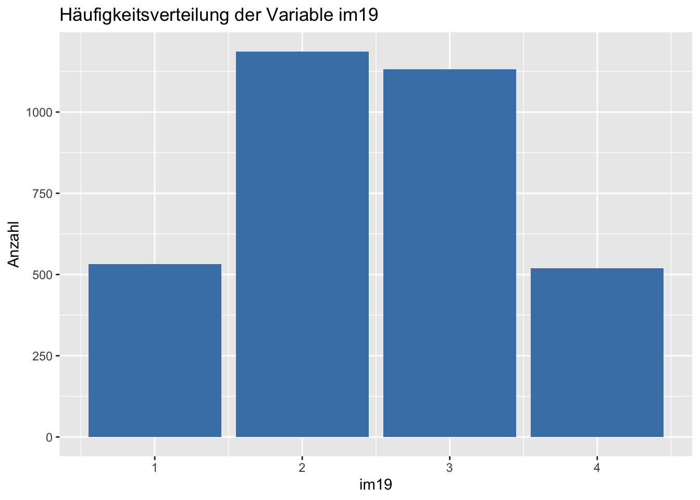
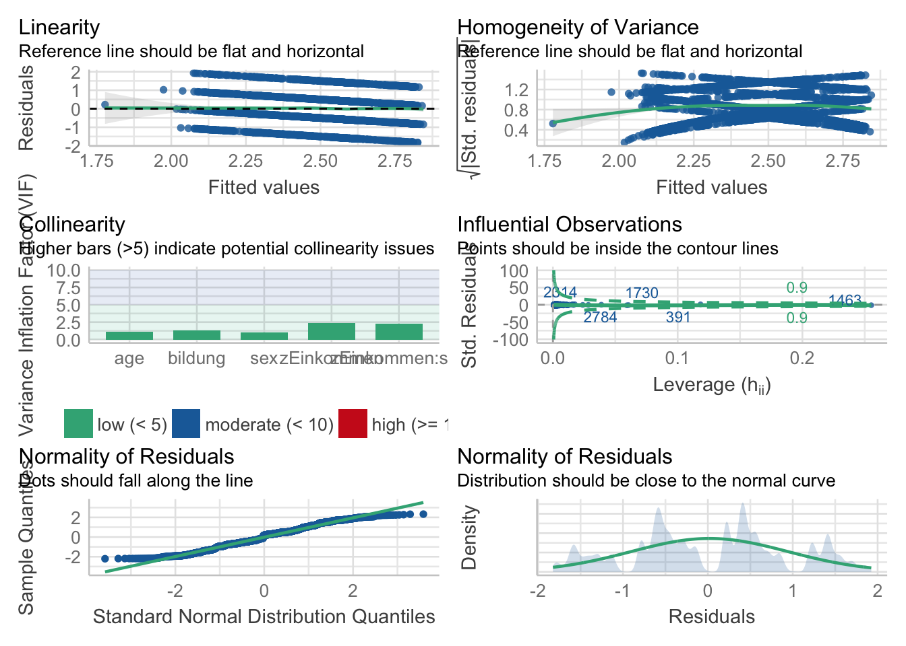
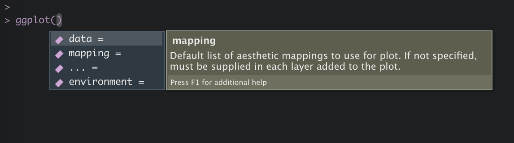

6 Grafiken erstellen
In diesem Kapitel werden wir lernen, welche Werkzeuge uns R zur Erstellung von Grafiken zur Verfügung stellt und
wie uns das Paket ggplot2 aus dem tidyverse ermöglicht durch explorative Datenanalyse verborgene Zusammenhänge zu entdecken, sowie
Resultate darzustellen und zu kommunizieren.
Im Gegensatz zum ursprünglichen Grafiksystem R Base Graphics, welches auf Base R aufsetzt, basiert ggplot2 auf der intuitiven Syntax
Grammar of Graphics. Hiermit lassen sich durch eleganten, flexiblen und konsistenten Code sehr komplexe Grafiken erstellen und nahtlos mit den
Funktionen des tidyverse verbinden.
Achtung! ggplot2 benötigt Datensätze im long Format. (siehe hierzu: R for Data Science - Tidy Data)
Da Grafiken mit ggplot2 immer nach dem gleichen Prinzip erstellt werden, ergeben sich immer folgende Schritte:
Schritt 1: Erstellung eines Objekts mit der Funktion ggplot().
Schritt 2: Definition der Datengrundlage mit dem ersten Argument data = datensatz.
Schritt 2: Definition von “aesthetic mappings,” also der Wahl einer Variable für die x-Achse: x = var1, y-Achse: y = var2,
Gewichtung: weight = gewicht und zur Gruppierung der Daten: group bzw. colour, shape, linetype oder fill = var3 über die Funktion mapping = aes().
Schritt 3: Definition verschiedener “Layer” bzw. “Schichten.” Hierbei definieren wir, was dargestellt werden soll - z.B. ein Histogramm oder Linien.
Dabei wird uns in der Anzahl an Schichten kein Limit gesetzt. Die Funktionen beginnen dabei immer mit dem Präfix geom_, z.B. geom_bar() und werden über den
Operator + hinzugefügt.
Im Verlauf des Kapitels werden wir die einzelnen Schritte noch einmal vertiefen, gleichwohl wollen wir mit eingängigen Beispiel beginnen.
Beispiel 1:
Grundlage unserer Grafik und damit erstes Argument der Funktion ggplot() ist der allbus2018. Aufbauend definieren wir in der Funktion aes(), welche Variablen in unserer Grafik auf welcher Achse abgebildet werden sollen. Da wir lediglich eine Abbildung der Häufigkeitsverteilung der Variable im19 anstreben, müssen wir nur das Argument x = spezifizieren. Anschließend wird über das Argument weight = eine Gewichtung vorgenommen. Damit haben wir unser Fundament gelegt. Über den Operator + fügen wir nun weitere Schichte hinzu. Als erstes “Layer” fügen wir über die Funktion geom_bar das gewünschte Balkendiagramm hinzu. Die Funktion führt dabei voreingestellt über das Argument stat = "count" einen Zählbefehl aus, welcher uns in Folge die Häufigkeitswerte der einzelnen Ausprägungen ausgibt. Als weitere Argumente definieren wir noch die Farbe der Balken mit fill = und das Auslassen fehlender Werte über na.rm = T. Als Endpunkt fügen wir noch eine zweite Schicht hinzu, die uns mit der Funktion labs() ermöglicht alle Achsen frei zu Beschriften. Fertig!
allbus2018 %>%
ggplot(aes(x = im19, weight = wghtpew)) +
geom_bar(fill = "steelblue", na.rm = T) +
labs(y = "Anzahl", title = "Häufigkeitsverteilung der Variable im19")
Die folgende Grafik erweitert unsere Fähigkeiten zusätzlich um vier Punkte. Durch die nahtlose Integration der Funktionen des tidyverse und strengejacke ist es uns möglich innerhalb eines Objekts sowohl die Daten zu manipulieren, als auch diese in die nachfolgende Grafik einzubeziehen. So war es in unserem Beispiel von Nöten die Grupperungsvariable sex (Geschlecht) erst zu einem Faktor zu konvertieren, um sie nachstehend nutzen zu können - Funktion to_label(). Weiterhin haben wir das Nettoeinkommen der Befragten mit dem Argument y = auf der y-Achse abgebildet und das Geschlecht der Befragten über das Argument colour = als Gruppierungvariable gewählt. Damit erlaubt uns ggplot() die einzelnen Datenpunkte farblich hervorzuheben, sowie über die Funktion stat_summary() einen Mittelwertvergleich zwischen beiden Gruppen über ein Liniendiagramm abzubilden.
allbus2018 %>%
to_label(sex) %>%
ggplot(aes(x = age, y = inc, colour = sex, weight = wghtpew)) +
geom_point(na.rm = T, alpha = 0.1) +
stat_summary(fun = "mean", geom = "line", na.rm = T, size = 0.8) +
labs(x = "Alter", y = "Einkommen", colour = "Geschlecht",
title = "Mittleres Einkommen nach Alter und Geschlecht")
Nun wollen wir uns die einzelnen Schritte nochmal im Detail ansehen.
6.1 Schritt 1:

Wir beginnen mit einem Datensatz und erstellen ein Plot-Objekt mit der Funktion ggplot(). Als erstes Argument fügen wir unseren Datensatz ein. Hierbei bestehen zwei Möglichkeiten der Umsetzung.
# Ohne Pipe
grafik1 <- ggplot(data = allbus2018)
# Mit Pipe
grafik1 <- allbus2018 %>%
ggplot()